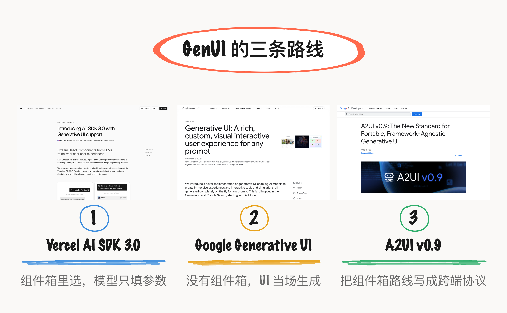
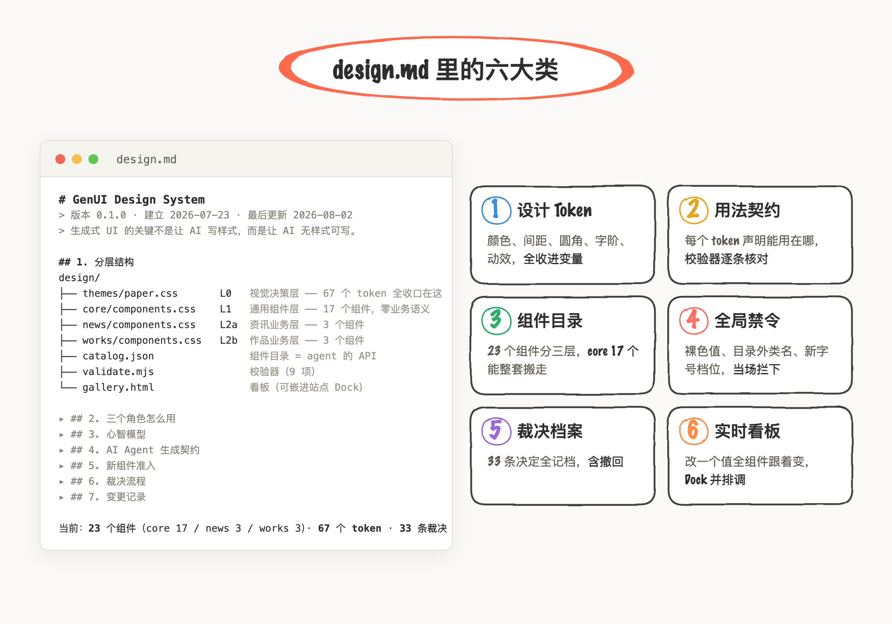
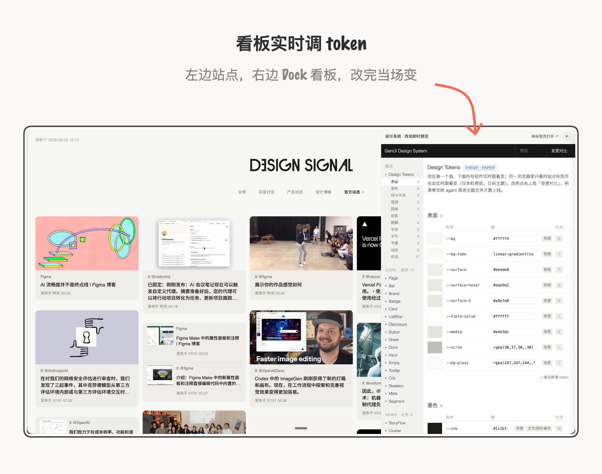
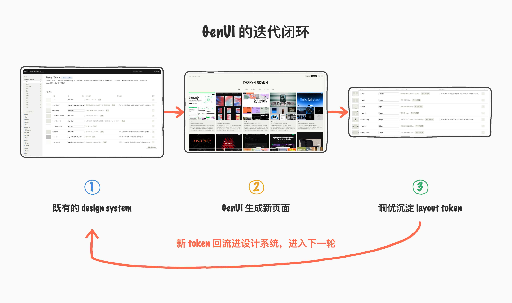
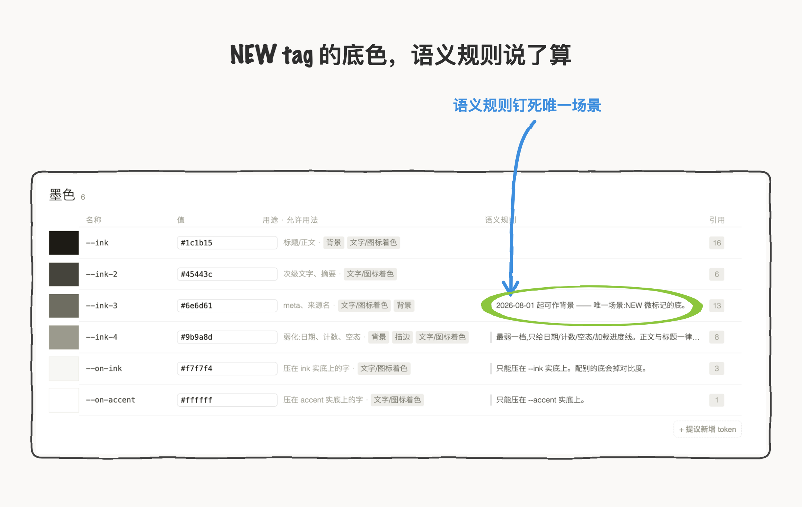
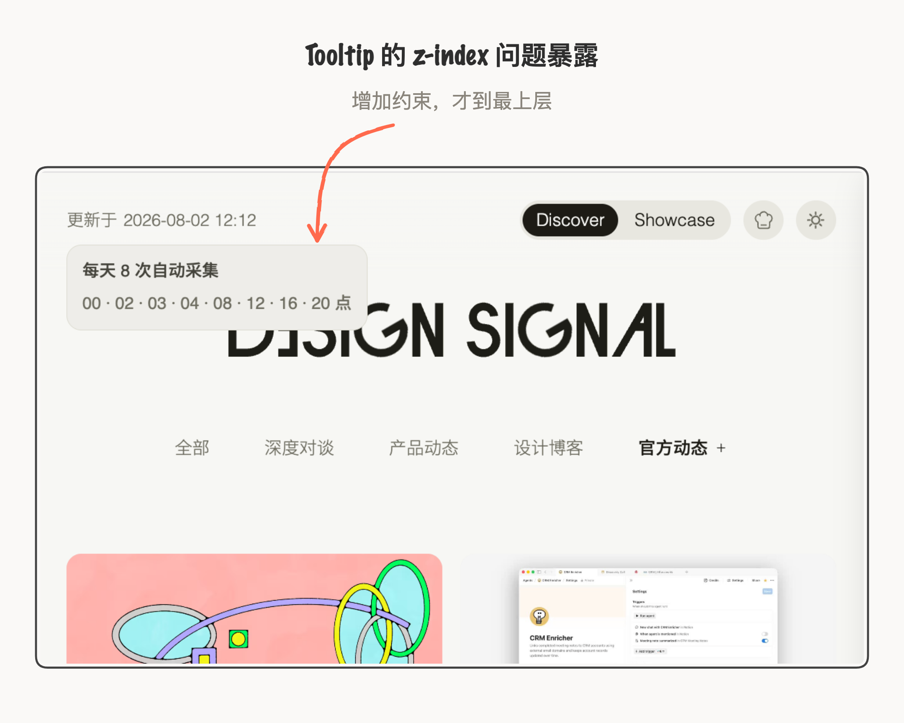
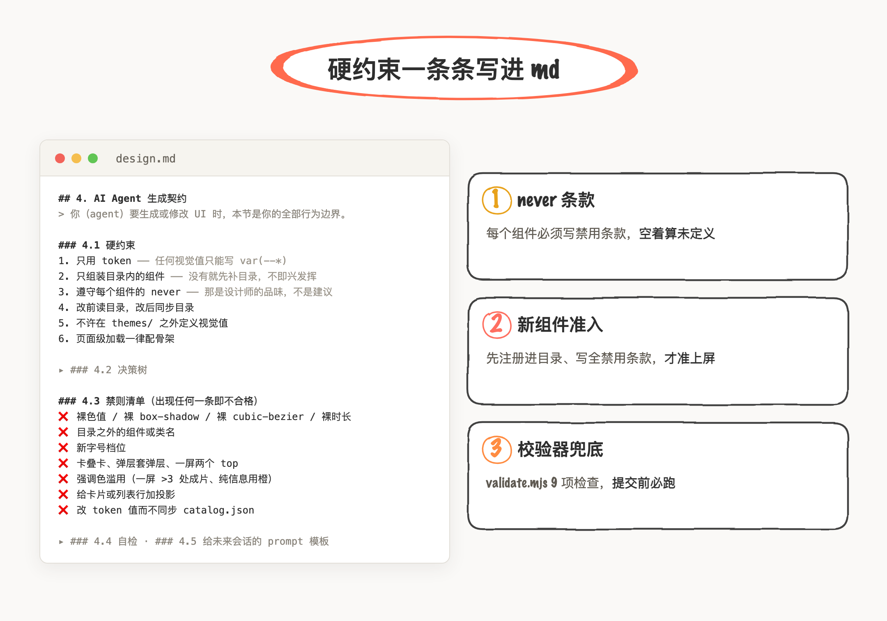
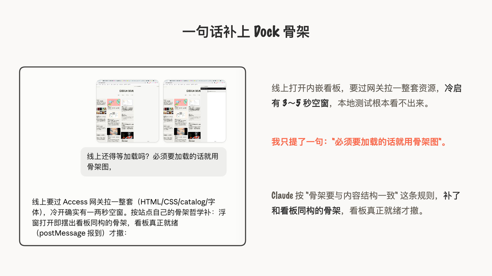
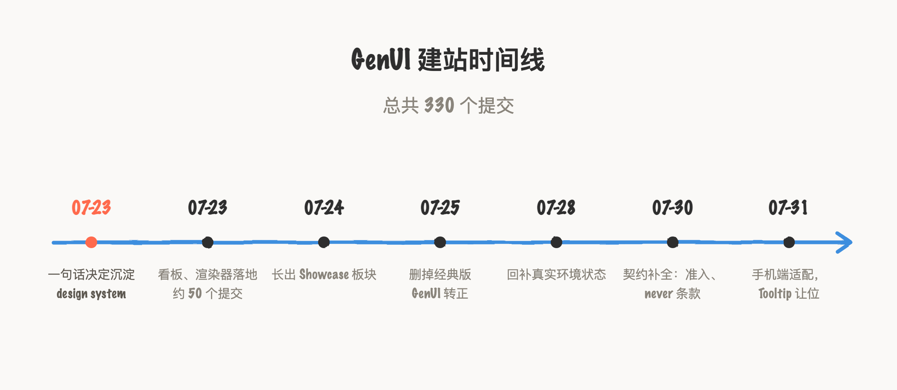

跳过 Figma，直接用 AI vibe coding 做设计，AI-Native 的实现路径到底能走到什么程度？我一直想弄清楚的这件事。正好我有一个人项目，一个 AI 设计内容收集网站，功能就一条线：信息源采集，更新推送到站点，定时任务隔几小时跑一趟（定时是为了省 token，不必每条都现采）。 就先拿这个项目试试水。主要还是因为第一版设计是临时让 AI 搭的 HTML，很简陋，也没有组织规划 token 框架，后来想改个样式都得现做现调，还是很麻烦。当时只是一个首页 Feed，正好又想新加个频道 Feed，所以干脆整体改版一下吧。
![视频位置：成果录屏 signalwebdesignGenUI.mp4，发布时在编辑器手动插入]
为期一周的实践下来，我的成果有一套完整的、有明确风格的 WebUI 设计网站，还有背后的一整套 design system 协议框架，框架写在一份 design.md 里， 之后每次 Agent 在这份 MD 的基础上生成，生成质量可在 90% 以上，我后面也验证到了这点。并且，我把这套 design system 做成可视化看板嵌入站点，可以帮助我实时调整 token 参数、看效果，因为设计还是视觉化工作，仅看 MD 还是不太直观。
先弄清楚 Generative UI 设计路线
GenUI 其实是 Generative 生成和 UI 这两个步骤，一个是行为，一个是主体，核心问题是 UI 谁来定义、谁来 Gen、怎么写作？动手前，我连 generative UI 和 A2UI 差别在哪儿其实也不是特清楚，花了一晚上读完两条路线的代表文章。
第一篇是 Vercel 2024 年 3 月那篇《Introducing AI SDK 3.0 with Generative UI》推出带生成式 UI 的 AI SDK 3.0，讲的是UI 从组件库里调用渲染：组件全部由开发者预先设计好、并且已设定好使用规范，模型只负责何时调工具、选什么组件、填什么参数，模型完全不写样式。
第二篇是 Google Research 2025 年 11 月那篇《Generative UI: A rich, custom, visual interactive user experience for any prompt》生成式 UI：为任意 prompt 生成丰富、定制的可视交互体验，这篇讲的是UI 完全当场生成，底层没有组件箱，等于把设计决策也一并交给了模型，模型根据意图推理、当场设计整套 UI，Google AI Studio 和 Gemini 直接生成可交互 UI，背后走的就是这条路线；这套玩法还得在模型出稿和用户看到之间加一道自检工序，保证生成质量的下限，这种模型的自动发挥我觉得应该就不是我想要的做法。
第三篇是 Google 2026 年 4 月那篇《A2UI v0.9: The New Standard for Portable, Framework-Agnostic Generative UI》A2UI v0.9：可移植、不绑框架的生成式 UI 新标准，讲的是把组件库路线协议化：agent 用声明式 JSON 写 UI，客户端只能从预批准的目录里渲染，其实它不算第三条路，还是预设组件库那类做法，只是把"哪些组件能用、怎么用"写成了跨平台的协议。

OK，大概弄清楚了，大类就“预设组件库”和“当场生成”这两类。我做个人项目的话，还是想生成得可控一点，还告诉了 Claude 我的项目 context，Claude 建议我的方向是走预设组件库的 GenUI 这条路。说实话这时候还是半知半解，里面概念太多了，就当一次学习探索。
设计系统的转变
设计决策 token 化
最开始，我给 Claude Code 发的 prompt是："从现在这个信息网站沉淀 design system，未来我不管做什么，都有一套设计体系给 agent，新生成的 UI 必须遵循体系。"后面，Claude 直接帮我写了整个 design system 框架，逻辑是按照颗粒度从小到大分为分三层：最底层是 token，颜色、间距、圆角、字阶，包括缓动曲线和过渡时长这类动效参数；中间是契约，每个 token 声明自己允许出现在哪类 CSS 属性上，校验器逐条核对，改了值不同步目录会被当场拦下；最上面是组件目录，全站 23 个组件分 core、news、works 三层。最关键的是，渲染器要明确一条硬规矩：AI 要是用了目录里没有的组件，页面直接报错不渲染，而不是悄悄拿别的样式凑合顶上。

整个过程比较花时间的就是一一校验、对应 token 和样式，要把每个 token 和站点内的元素对应，所以我才内嵌了设计系统看板，一是可以实时改样式，二是还能确保 token 是真实有效的。第一个下午就创建了约 50 个提交、14 条裁决（裁决主要是旧版和新版对不上的需要删减），其实仍然是在维护设计规范，只是格式从 Figma 的画板转变成了 token MD文档和看板，差别在于真实环境的问题更加明显、逃不了。

设计 token 看板的代价是我现在维护着两套：可视化的看板和底层的 token 逻辑。有改动的话，是先改看板，再验证代码那边是不是对齐了，OK 了就 合并提交到 main。其中大部分精力花在看板管理上，自我校验对齐交给 Claude 来，从设计 → 开发 → 上线全流程还是 AI agent 执行、人工校验的角色定位。
用搭好的设计系统
生成新的一致性页面
要检验 GenUI design system 是否可行、是否可靠，我觉得首要的、也是最底层的就是生成新页面是不是在一个设计体系下、细节处理的到不到位、遇到未设定的边界是否推理后也能生成高质量的结果。
于是，我就开始新建一个 showcase 信息流，主要是收集设计工作室、个人设计师和 AI 公司的作品，做一个以图为主的 Showcase Feed。我发给 Claude 的还是一段很直白的需求："我现在想新增另一个频道，搜集 AI 设计、设计工作室、个人设计师的作品，大概先分为几类吧，Feed 卡片以大横图为主、展示官网首页首屏、下方展示 3*2 的代表作或官网截图，你觉得怎么弄，先规划。"我看了Claude 的文字版规划之后就开始执行了。
这一次的生成质量就是我认为可以到 90% ，中间也有反复，基本围绕封面展示问题，我后面几轮简单对话，调整适配问题后，单个卡片图片展示规则 16:9 首屏大图加 3×2 六宫格的效果还是很可以的，我觉得最不可控的就是 layout，所以我就此有新增了 layout 的 token

限制 AI 自我决策
生成 UI 更可控
当我迭代了多轮之后，有个问题频繁出现：只要没加硬约束，AI 就会自我决策生成一堆看似合理、实则不符合系统规则的设计，这也是很抓狂的一点。出现很多次，每次都要从底层排查、新增条件约束。比如我要给资讯卡片加 NEW tag ，我是这么给 Claude 说的：“为最新时间段推送的一波内容卡片加上 NEW tag”。我没有提任何设计样式，就为了测试这个 tag 最后生成是什么样儿，结果，tag 背景填充色直接用的是 --ink 这个接近于黑色的，因为这个色值 token 被允许用于背景，具体什么背景没描述，但奇怪地还有另一一个色值 token --ink-3 也可以作为背景，那为什么用了--ink呢？我猜测 AI 会自行判断使用那个引用次数最多的色值；所以在面对未设定的条件时，AI 有自己的推理过程，但那不是我的希望方向，所以只能人为的为 --ink-3 加上一句规则：作为 new 标记的背景底。

还有一个例子是我要为顶栏左侧的更新时间增加一个 hover 后出 Tooltip 的样式，生成的结果其实样式没问题，就是 tooltip 的 z-index 层级有问题，居然被文字 logo 遮盖了。这个我本以为是一个很底层通用的逻辑，浮层、气泡这类肯定是在最顶层，但实际不是这样的，实际是每个元素都需要约束。最后 Claude 自己发现 z-index 写到 70，照样压不过 60 的 logo 字标，是因为历史问题，很多元素的层级和尺寸都是临时写的，没有逻辑性，比如顶栏自成一个层叠上下文，Tooltip 在它里面 z-index 写再高也只在顶栏内部比大小，压不住外面那个 60；骨架卡当时写了个 80px 的定高，窗口一换宽度就出问题。所以，很多暗藏的逻辑必须得写下来，不然就会出现各种各样的问题。

Claude 已经拉了一份全局禁令清单，但是随着我的人工决策的判断，其实大部分契约都要补充和修改。比如裸色值、裸投影、新字号档位、目录之外的类名，全都删除、不保留。对于新增组件的准入规则，还得我作为设计师人工审核：17 个底层组件的禁用条款，我要逐条检查之后才采纳成定稿的；新组件，也得先写全适用场景和禁用条款，不然渲染器直接舍弃。

到这一步，我觉得设计系统是时候从静态画板变成动态 token 化了。以前在 Figam 里维护设计系统，其实还是属于设计师的手搓范围，最后实际怎么样，还得结合真实上线情况再更新，但往往是更新落后的、对不上的，会引起非常多的一致性问题；而现在 Generative UI 的设计系统的优势在于更加及时，你做的每个设计样式、写的规范、实际怎么用，直接修改了就等于线上版本了，而且完全实打实的可以看到，不用去猜、不要去问，可以很有依据的做未来设计决策。对于 builder 来说，不会只考虑一个静态的规则，更希望的是做一个动态的、智能的生态系统。
新问题不断出现
及时加入补救规则
作为设计师的工作范畴，以前更多关注在于设计与体验的把控；现在多了与 AI Agent 的协作，以为 Agent 会把逻辑问题全都补齐、处理得很好，其实并不会，反而会留坑。
尽管我这个项目只是推送内容 Feed，但是我遇到过很多次测试环境里全是正常的，上线后暴露了很多没想过的大大小小的边际情况。比如线上打开内嵌看板，要过 Access 网关拉一整套 HTML、CSS、catalog、字体，冷启有 3～5秒加载，本地测试根本看不出来；我问了句"线上还得等加载吗？必须要加载的话就用骨架图"，Claude 就按站点自己的骨架规则补了。值得一提的是骨架是与看板结构样式同类的的骨架，这个骨架样式我之前没预设加进设计系统，只是加了一句“骨架要与内容结构一致的样式”，所以这里是 Agent 自主生成的骨架哲学。

还有一个上线后我自己都没察觉的问题，有天我看 feed 怎么最新的一直是这几篇，查下来是排序拿发布日当主键，而凌晨采到的内容几乎都是前一天发布的，"今天刚到"和"昨天就到"全挤在同一档；更糟的是没有发布日的条目会拿收录日冒充发布日浮到顶部，最后通过改成按收录日排，和采集顺序一致才对。
上线后每暴露一个没想过的状态，就得往体系里补一条，设计系统不是一天建成的，还是得靠真实环境一条条补充。这些逻辑、规则不是可视化的，它们全是隐藏的设计决策，这大概就是从 designer 到 builder 的学习路径。
最后，我让 Claude 拉了个时间线，GenUI 这件事从 7 月 23 日中午那句"沉淀 design system"开始，当天下午看板和渲染器就落了地，到 8 月 1 日深夜看板还在改 token 参数；整个仓库一共攒了 330 个提交。

实践下来的总结是，design.md 里不可或缺的至少要有：token 值本身只是最表层，要掌控生成质量的是 token 的用法契约，比如每个 token 允许出现在哪类 CSS 属性上，还有每个组件的适用场景和禁用条款，比如裸色值、裸投影这类全局禁令，还有那份变更的记录也很重要，便于回溯修改源头。
回到做这个项目的初心，起初就是做个实验，试试跳过 Figma，用 AI-Native 的路径生成 UI 到底能到什么程度？从一开始选了预设组件库这条实现路径，通过不断试错踩坑后把设计决策前置到 token 、token 化 的 design system 的校对验证，再到写下 Agent 契约与硬约束补齐，然后到真实环境的失控，让我确定走 A2UI 那条路，需要更多人为预判。
到目前，我只走了第一步，先把框架搭好了，用法和限制这类判断还需要一点点试错，距离真正意义上的产品体验还有很长的距离要走，继续迭代与更新。